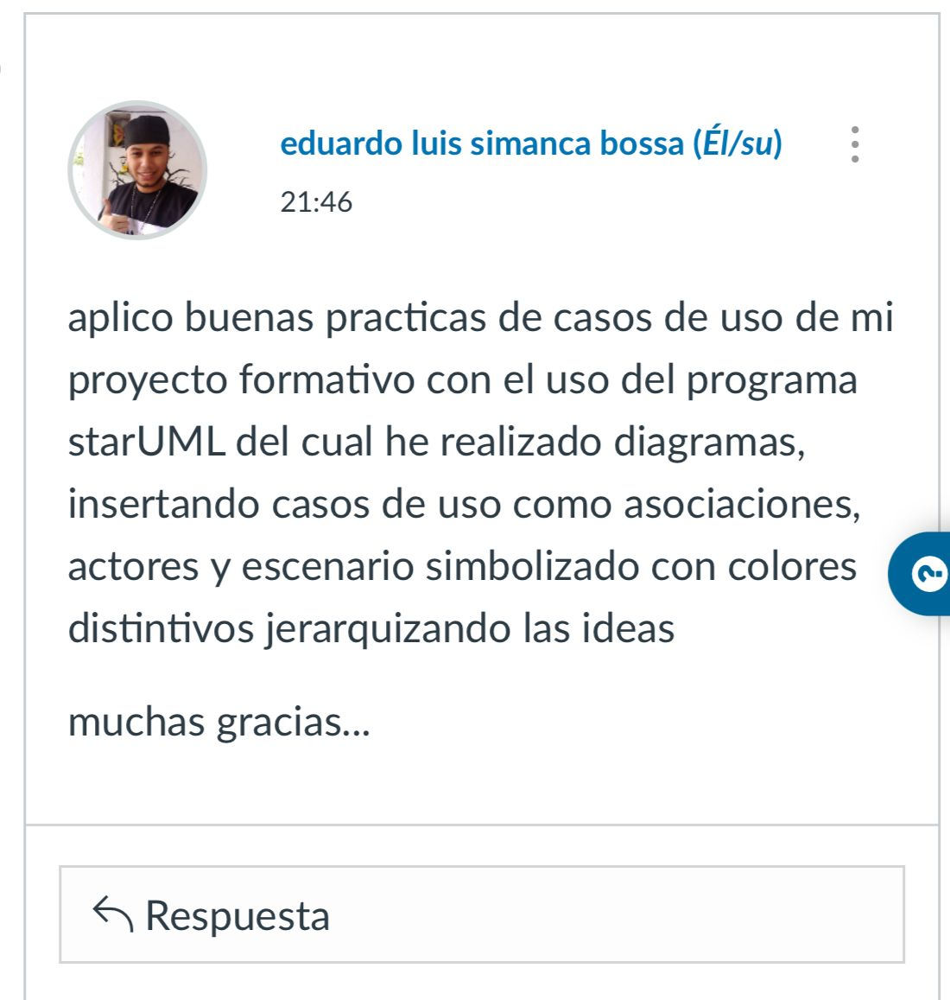
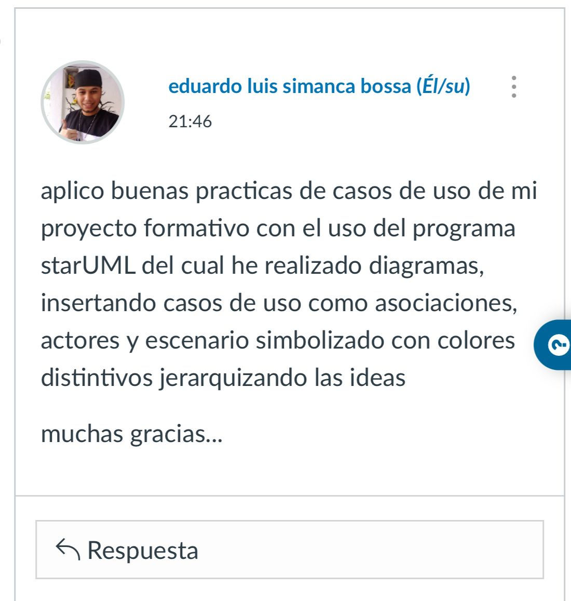

Introducción a la Ingeniería de Requisitos: proceso de descubrimiento, refinamiento, modelización, especificación y validación de lo que se desea construir. En este proceso tanto el cliente como el analista juegan un papel muy importante. Es decir, se convierte en pieza clave para poder medir la calidad de un sistema informático al poder iniciar la definición de la batería de pruebas que el sistema debe pasar, garantizando que éstas satisfacen los requisitos establecidos y por lo tanto el sistema es válido y funcionalmente es correcto.
los Requisitos: Es cualquier término que defina las características y funciones de una aplicación o sistema. La ingeniería de requisitos implica determinar y recopilar las necesidades y condiciones necesarias para el desarrollo de software, ya sea para software nuevo o existente. Se estableció que los requisitos deben ser claros, medibles, verificables y libres de ambigüedad o contradicción.
Definición de Requisitos: Se definió un requisito como una condición o capacidad requerida por el usuario para resolver un problema o alcanzar un objetivo. También puede ser una representación documentada de dicha condición o capacidad.
Técnicas de Recolección de Requisitos: Se discutieron varias técnicas, incluidas entrevistas y sesiones de lluvia de ideas, para recopilar información de manera efectiva de los interesados. Estas técnicas ayudan a comprender las necesidades del cliente y definir los requisitos del software.
Entrevistas para la Recolección de Requisitos: Las entrevistas son una técnica comúnmente utilizada para recopilar requisitos. Se destacó la importancia de la preparación adecuada, la selección de participantes y la planificación de entrevistas para una recopilación de información efectiva.
Lluvia de Ideas para la Recolección de Requisitos: Las sesiones de lluvia de ideas implican generar ideas libremente en un ambiente no crítico. Se mencionaron las fases clave, como la preparación, la generación de ideas y la consolidación, para realizar sesiones efectivas.
Casos de Uso: Los casos de uso son diagramas utilizados para la recolección y análisis de requisitos en UML. Describen las interacciones entre actores y el sistema, representando requisitos funcionales.
Actores y Casos de Uso en UML: Se explicó que los actores representan sujetos que interactúan con el sistema, pudiendo ser usuarios humanos o componentes del sistema. Los casos de uso describen las interacciones entre actores y el sistema para cumplir con objetivos o requisitos específicos.
Relaciones en los Casos de Uso: Se discutieron relaciones como asociación, inclusión, extensión, generalización, que se utilizan para representar interacciones y dependencias entre casos de uso en los diagramas UML. Estas relaciones ayudan a modelar eficazmente el comportamiento y la estructura del sistema.
Síndromes en la Elicitación de Requerimientos: Se describieron dos síndromes comunes en el proceso de elicitación de requerimientos de software: el síndrome de "si, pero..." y el síndrome de "las ruinas enterradas". Además, se delinearon los pasos del proceso de elicitación en cuatro etapas
Formato para Identificar el Problema: Se presentó un formato para identificar y definir claramente un problema en el contexto de un proyecto. Este formato incluye secciones para describir el problema, su impacto, una solución propuesta y errores comunes a evitar.
Técnica para Descubrir el Problema detrás del Problema: Se explicó cómo identificar la raíz de un problema utilizando técnicas como los diagramas de cola de pescado y los diagramas de Pareto. Se proporcionó un ejemplo práctico de aplicación de esta técnica en el contexto de un hospital con problemas de facturación.
Resolución de Problemas en el Ejemplo del Hospital: Se describieron los problemas identificados en un hospital con su sistema de facturación y se propuso una solución para cada uno de ellos. La solución involucra implementar un nuevo sistema de facturación que aborde las deficiencias del sistema actual.
Importancia del Análisis y Resolución de Problemas: Se resaltó la importancia de identificar correctamente los problemas y sus causas subyacentes, así como de proponer soluciones efectivas. Se enfatizó en la necesidad de comprender las necesidades y restricciones del cliente y del usuario final durante todo el proceso de desarrollo del software.
El Unified Modeling Language (UML): es un lenguaje estándar para la especificación, visualización, construcción y documentación de los artefactos de un sistema de software. La versión 2.5 introduce mejoras y extensiones significativas.
Origen: UML se originó a principios de la década de 1990 como una fusión de varios métodos de modelado de software. Fue desarrollado inicialmente por Grady Booch, Ivar Jacobson y James Rumbaugh en Rational Software.
El Proceso Unificado: El Proceso Unificado es un marco de trabajo iterativo e incremental para el desarrollo de software que utiliza UML para modelar sistemas de software. Proporciona directrices detalladas para el desarrollo de productos de software.
Arquitectura Dirigida por Modelos (MDA): MDA es una metodología de desarrollo de software que utiliza modelos para describir los sistemas de software. Se centra en la separación de los aspectos de la aplicación y la generación automática de código.
Conceptos de la Orientación a Objetos: Los conceptos fundamentales de la orientación a objetos incluyen abstracción, encapsulamiento, herencia y polimorfismo. Estos conceptos son la base de UML y se utilizan para modelar sistemas de software de manera efectiva.
Modelado de los Requisitos: El modelado de requisitos en UML permite capturar y documentar los requisitos funcionales y no funcionales de un sistema de software. Se utilizan diagramas de casos de uso, diagramas de clases y otros artefactos para este propósito.
Modelado de la Dinámica: El modelado de la dinámica en UML se refiere a la representación de los aspectos dinámicos de un sistema, como el comportamiento de los objetos y las interacciones entre ellos. Se utilizan diagramas de secuencia, diagramas de estado y otros para este fin.
Modelado del Ciclo de Vida de los Objetos: UML permite modelar el ciclo de vida de los objetos, desde su creación hasta su destrucción. Se utilizan diagramas de objetos y otros artefactos para representar estos conceptos.
Modelado de la Arquitectura: UML se utiliza para modelar la arquitectura de un sistema de software, incluidos los componentes del sistema, sus relaciones y su estructura general. Se utilizan diagramas de componentes, diagramas de despliegue y otros para este propósito.